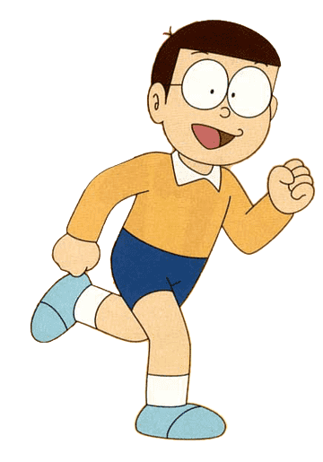
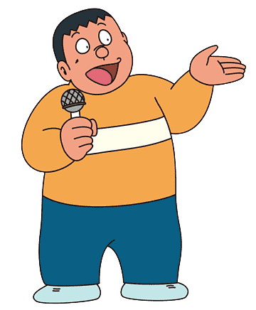
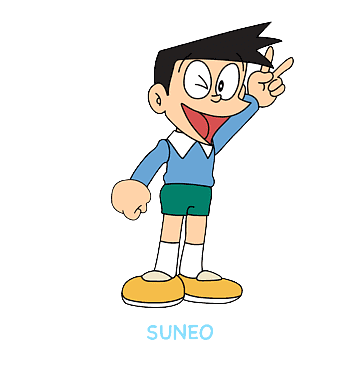
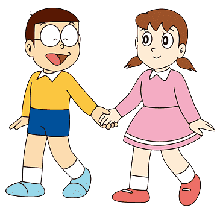
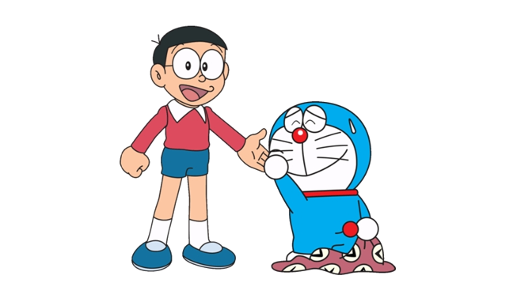

Doraemon (ドラえもん) is a Japanese manga series written and
illustrated by Fujiko F. Fujio. The manga was first serialized in December 1969.
Its chapters were collected in 45 tankōbon volumes published by Shogakukan from 1974 to 1996.
The story revolves around an earless robotic cat named Doraemon, who travels back in time from
the 22nd century to aid a boy named Nobita Nobi.Doraemon has a four-dimensional pouch in which he
stores tools, inventions, and gadgets from the future to aid Nobita
whenever he is faced with a problem. Although Doraemon is a cat robot,
he has a fear of mice because of an incident where robotic mice chewed off his ears.
This is why Doraemon lost his original yellow color and turned blue, from sadness.
Nobita Nobi is a ten-year-old Japanese school boy,
who is kind-hearted and honest, but also lazy, unlucky, weak,
gets bad grades and is bad at sports. One day, a robot cat from
the 22nd century named Doraemon is sent back to the past by Nobita's
future grandchild,Sewashi Nobi, to take care of Nobita so that his
descendants can have a better life.
Nobita has three main friends: Takeshi Goda (nicknamed Gian),
Suneo Honekawa (Gian's sidekick),and Shizuka Minamoto, Nobita's best friend and love-interest.
Gian is a strong, leading and domineering boy,
but also loyal to his friends. 
Suneo is a wealthy and spoiled boy who uses his
friendship with Gian to win the respect of other schoolmates. Although Gian and Suneo
are Nobita's friends, they also typically bully and abuse him. Nobita normally responds
by using Doraemon's gadgets to fight back against them, but Nobita has a tendency to get carried
away with using the gadgets (or Gian and Suneo, if they steal it away), which typically results in
unintended consequences for him and others.
Shizuka is a gentle and kind girl who frequently plays with Nobita.
Nobita has a crush on Shizuka; she is his prospective future wife
(Nobita's future wife is initially Gian's younger sister) 
Either of the two endings is happy ending and they are both touching.
However, I feel like Doraemon should not have any ending at all since he is a symbol,
a dream for any children. I think we should let Doraemon and Nobitalive forever
at Nobita’s age of under 10 years old. A reason that I do not want Doraemon to have any ending because
I do not like the fact that they have to break up at some point and also I do not want to think of a factor
that Doraemon is a robot, who will never dies or getting old, but Nobita is different. He can get older and
even disappear forever in Doraemon’s life. I do not like it at all. It is better to have no ending;
Nobita can live as a fourth grader forever with Doraemon, enjoying their childhood.
(ドラえもん) is a Japanese manga series written and illustrated by Fujiko F. Fujio. The manga was first serialized in December 1969. Its chapters were collected in 45 tankōbon volumes published by Shogakukan from 1974 to 1996. The story revolves around an earless robotic cat named Doraemon, who travels back in time from the 22nd century to aid a boy named Nobita Nobi.Doraemon has a four-dimensional pouch in which he stores tools, inventions, and gadgets from the future to aid Nobita whenever he is faced with a problem. Although Doraemon is a cat robot, he has a fear of mice because of an incident where robotic mice chewed off his ears. This is why Doraemon lost his original yellow color and turned blue, from sadness.